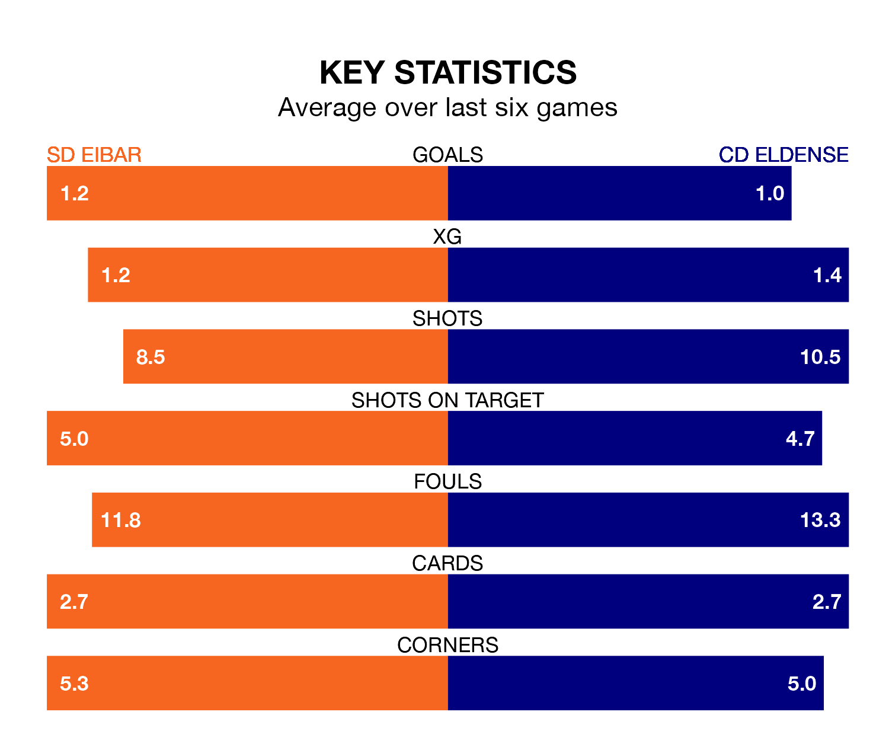

SD Eibar host CD Eldense in Saturday's match at Estadio Municipal de Ipurúa looking to bounce back from defeat last time out in the Segunda División.
Eibar, who sit fourth in the league after 32 games, fell to a 3-1 away defeat to Real Valladolid on March 24.
They face an Eldense side who also lost their last match, a 2-1 defeat to Racing Santander, and who sit 13th in the table.
With 49 goals in 32 games so far this season, Eibar are the league's joint-second-highest scorers with 1.5 goals per game. But they are conceding more than average too, letting in 37 goals at a rate of 1.2 per game.
Eldense are also above average scorers, with 1.2 goals per game, compared to a league average of 1.1. They have conceded 1.3 goals per game.
In Jon Bautista Orgilles, the hosts have one of the league's most on-form strikers so far this season. He has notched 12 goals in 27 appearances, to sit fourth in the scoring charts.
The away team's top scorers, with eight goals each, are Juan Tomás Ortuño Martínez, Mario Soberón Gutiérrez and Iván Chapela López.
Eibar are in mixed form in the Segunda División, with two wins and a draw from their last six games.
And also with two wins and a draw over that period, Eldense's form is identical – they have both taken seven points from 18.
Updated: 12:39 (UTC), 26/03/24